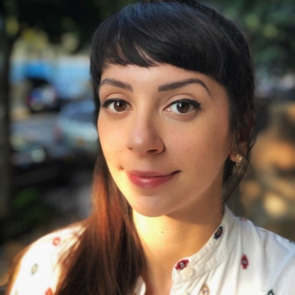
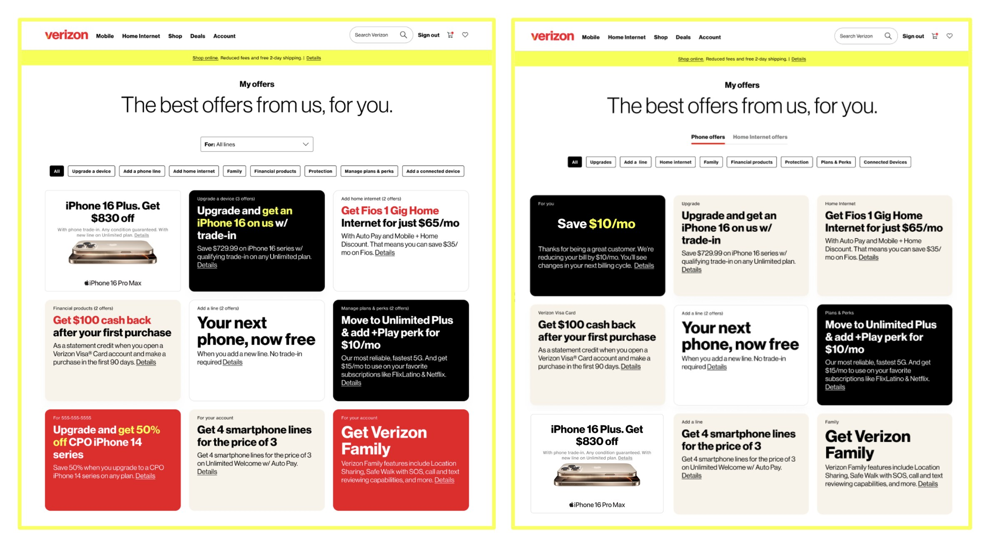
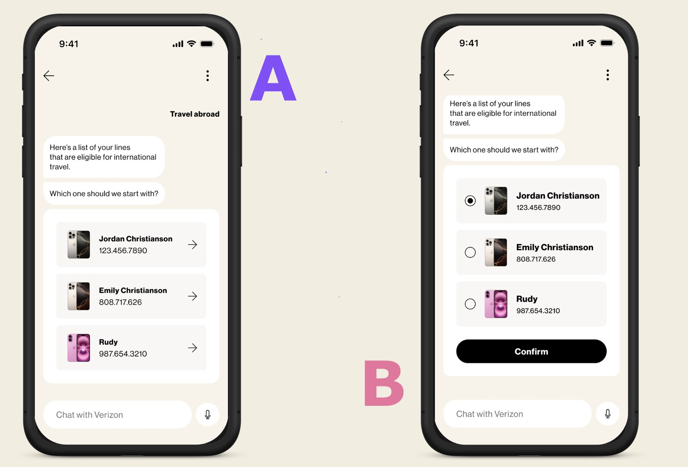
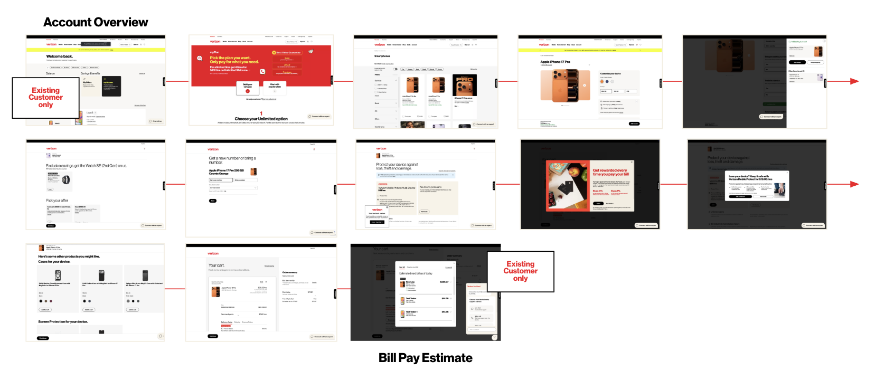
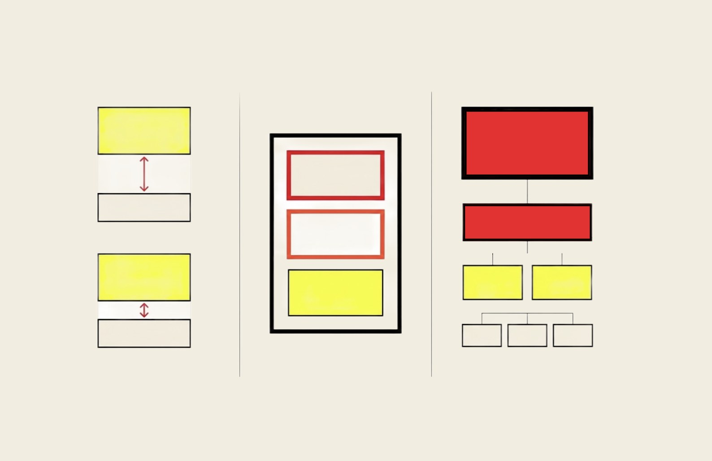
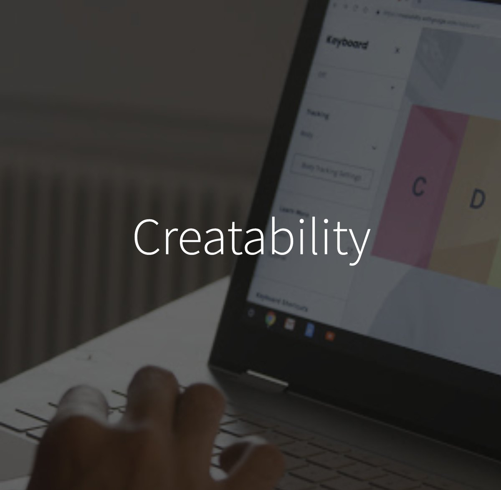

UX research leader · Human-Computer Interaction
Technology serves people best when they participate in its design.
For more than 10 years I've built and led UX research programs across consumer technology, telecommunications, healthcare and emerging tech. My work pairs behavioral data with qualitative depth, puts accessibility at the center of product decisions, and uses AI to make research faster without making it sloppier.
clairev8@gmail.com LinkedIn Google Scholar

Focus areas
Mixed methods
Analytics show where people drop off. Interviews and usability work explain why.
Inclusive design
Assistive technology benchmarking, WCAG 2.2, and research with participants with disabilities.
Design systems
Research programs that make shared components worth adopting.
AI-enabled research
Repositories, synthetic testing and tooling, validated before they're trusted.
Selected work
5 case studies · 2018–2026
-
01 · Verizon · 2025
Helping people act on personalized offers
My synthesis of Verizon's offer research shaped a tile redesign, and the design changes contributed to a 25% increase in offer acceptance.
Read the case study+25%offer acceptance rate+216%average monthly add-a-line orders+265%average monthly traffic to My Offers
-
02 · Verizon · 2026
Making selections inside a chat
A 193-person test showed vertical lists were 10 seconds faster than carousels, and set the standard for choosing a line in Verizon's AI chat.
Read the case study193participants10 secfaster median task time, vertical vs. carousel70%confidence at the highest detail level
-
03 · Verizon · 2026
Finding traps in a mobile checkout flow
I tested a reskinned mobile checkout with 27 assistive technology users, traced the barriers they hit to four root causes, and turned them into prioritized fixes for engineering.
Read the case study27assistive technology users3assistive technology groups: screen reader, switch and voice control, magnification4root causes, each turned into a prioritized fix
-
04 · Verizon · 2026
Evaluating a Design System
A program of research on how product teams use the design system, why they adopt or detach from it, and whether it delivers on its promises. System components made delivery 5 times faster than custom builds.
Read the case study5 timesfaster component delivery than custom buildsabout 25%of redesign time savedmore than 1 monthshorter development cycles
-
05 · Google Creative Lab · 2018–2019
Creative tools for people of all abilities
I led user research with 25 people with disabilities for a set of accessible creative tools that won the 2019 Cannes Lions Design Grand Prix.
Read the case study25participants with disabilitiesGrand Prix2019 Cannes Lions, DesignOpen sourceexperiments anyone can use and build on
How I lead
Choosing the method for the question
Conjoint showed people liked each feature of a purchase flow on its own. Usability testing showed they got lost when the features were combined. I pick methods by the evidence a decision needs, like using diary studies over interviews to see how people with disabilities fit connected devices into daily routines.
Growing researchers
I managed and coached a team of six early-career rapid researchers on study design, synthesis and holding up under stakeholder questions. Four moved into senior roles.
Raising the bar on rigor
I partnered with Verizon's Insights Center of Excellence on standards for sample size, data quality and representation, and wrote our accessibility guidelines for surveys and vendors.
Moving faster with AI
I lead the design and validation of the team's AI research tools, including a searchable repository of 1,043 research studies. I also wrote our framework for using AI in research. Others include synthetic user testing and an automated readability crawler for verizon.com. I also co-led an AI tree-testing platform that compares how different AI agents navigate a site.
Accessibility beyond the product
I led the Insights Association's 2025 research initiative on disability identity, ran a workshop and certification at TMRE, and presented at the CRC. I also helped the Accessible Insights Consortium double its membership, and mentored two American Foundation for the Blind interns on a study of AI assistants and assistive technology.
Telling the story
Research only matters when it changes a decision. I write memos, readouts and executive presentations that make findings simple enough to act on.
Experience
- 2023–nowSenior UX Research Manager · Verizon
Owns the customer experience (CX) and UX research roadmap. Built and leads the design system, brand perception and accessibility research programs.
- 2020–2022Manager, UX Research · Verizon
Led and mentored a team of six researchers, and managed the rapid research portfolio on subscription plan and loyalty strategy.
- 2018–2019Creative Technologist · Google Creative Lab
User research and design exploration for Creatability.
- 2018–2019Accessibility Specialist · 2U
Usability and accessibility research for e-learning tools.
- 2015–2018HCI Research Fellow · New York University
Accessibility studies for Spectrum, Cooper Hewitt and the Processing Foundation, and a stroke rehabilitation device with NYU Rusk.
Education
- 2021PhD, Human-Computer Interaction (HCI) · New York University
- 2015Master of Professional Studies, Interactive Telecommunications · NYU Interactive Telecommunications Program
- 2009Bachelor of Arts, Psychology and Visual Arts · University of British Columbia
Writing and frameworks
More on Google Scholar
- 2026UXR × AI: Distributing intelligenceFramework for adopting AI in UX research
- 2023Tangible Progress: Tools, Techniques, and Impacts of Teaching Web Development to Screen Reader UsersACM Transactions on Accessible Computing (TACCESS)
- 2021Accessible Web DevelopmentACM TACCESS
- 2021Making the Elusive More TangibleW4A
- 2019Entertainment for All: Understanding Media Streaming AccessibilityCHI Extended Abstracts